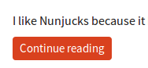

Hi folks!
Today we will try to create a simple CSS button to blog. It will be used as button for continuation reading and will be added on preview of pages block.
It should be look like:

Cool! Let's start.
First of all we need to specify some html element for that. It could be div or may be a. Let's pick a and create new class for that.
We should add it to our templates:
<a class="btn" href="{{ SITEURL }}/{{ article.url }}">Continue reading</a>
So our class for that purpose named btn.
Let's care about positioning. I want to put it at the lower right corner of article preview.
It quite a hard task in CSS :) I am not an expert in positioning but it is really weird why there isn't an easy way to apply horizontal alignment of elements! Yep there are several approaches but all of them may cause to serious issues.
Basics idea given on article, link is above.
Firstly I've tried to use float: right. But it breaks my marking since according to 9.5 Floats:
Since a float is not in the flow, non-positioned block boxes created before and after the float box flow vertically as if the float did not exist. However, the current and subsequent line boxes created next to the float are shortened as necessary to make room for the margin box of the float.
That means that float formatted elements not included in common flow of elements of page. Due to that reason I've decided to use trick with div.
I've created div and putted my <a class="btn"> to that div.
margin-left: auto;
margin-right: 0;
Applied some formatting to that div. And Voila! Now a have moved to the right together with div. Quite easy!
At least need to add some styling according to my blog color scheme. Result:

Enjoy!